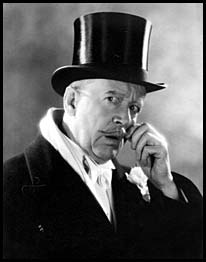

There is a sort of moral climate in a household.
John Morley
 Still the hellish war went on. Our soldiers, sailors, airmen and allies were fighting bravely and stubbornly. Never, surely, had war been more courageously waged nor sacrifices more resolutely borne.
In times like these those exempt from service and old codgers like myself did just what they were told: and so it was that hardly had I reached home that I found myself enrolled again in another of these companies, presenting another play. This time that grand old comedy, Goldsmith’s She Stoops To Conquer.
We travelled up and down the country giving our entertainment to large audiences of workers in these institutions - these Hostels. Now what should one understand by a Hostel? I find our Lexicographers have dealt with it a little grudgingly. One defines it as “a house of refuge for students, another terms it “a Hostel in some universities is an extra-collegiate hall for students”, another calls it “an Inn” and adds “archaic”. Oh come, come! Maybe Burbage or Shakespeare might have said “I will hie me to a Hostel” but let me speak of them as we found them.
These Hostels had been built specially for the accommodation of war-workers. We lived under the same roof as the war workers, whom it was our pleasure to entertain. They worked I believe mostly in munitions factories but neither I, nor any member of our numerous company, had any knowledge of them nor where they were. The workers were, I imagine, driven to work, as we were to ours, and brought back again to these Hostels.
Consider the enormity of the task of building these Hostels, the setting up of hundreds and hundreds of them all over the Country: the enormous army of workmen needed to build these enormous Hostels. It must have been a prodigious task and nobly was it done.
It is characteristic of our nation that we are inclined to take for granted our country’s achievements. Think of all it meant: the housing and feeding of many thousands of both sexes - the catering, the kitchens, heating and lighting, the staff, servers, clerks, accountants, secretaries of departments, the Postal arrangements. The sick bay or hospital in each with the matrons, nurses, medical officers etc.
Each of these Hostels had their own distinguishing features and each occupied a space of many acres. Some had a background of woods, trees and shrubs. Some had carefully tended lawns and beds of flowers forming an attractive setting. Some had creepers climbing the walls and roses hanging their blooms round the windows.
Picture the scene - we enter the main door and find ourselves in a wide corridor running through the entire building which is ventilated for summer and winter. We see groups of workers resting on the many seats and couches - chatting between their hours of duty, listening to the wireless, reading papers etc. We peep into various recreation rooms which splay out from the central hall: rooms for cards, draughts or chess; rooms with table tennis and in some skittle alleys. Each had an information counter fronting the Departmental Offices. Here inmates collect their letters, purchase their meal tickets and accommodation vouchers: next to this is the Post Office, the Hostel shop with a huge variety of foods, and often the daily papers. We see a cloakroom and a Lost Property Office and many other departments; a Library well stocked and a Librarian at certain hours. There is a tea room with little tables and chairs which on a fine day extends to the terrace outside.
A general chatter directs us to the Dining Hall: this occupies an entire wing and at meal times is full of movement - from the hatches and counters, from diners bearing their trays. The fare is varied and the portions generous. I always felt quite safe with Hostel food.
The Entertainment Halls were in a separate wing. Some were surprisingly spacious and in each the acoustics had not been forgotten. Behind the stage was a trifle cramped - one would hardly expect London standards - but any deficiencies were counterbalanced by the size of the audience and their close attention. When they thought we deserved it they were generous with their applause, and Hostel audiences paid for their seats. Sometimes there were movie shows.
The sleeping quarters were separate from the central building. Each house varied in shape and construction - some of brick, some of wood reinforced with concrete and each had a separate name - of a flower, tree or precious stone. We expected to see dormitories with long rows of beds. Each person had their own private bedroom, nicely appointed and there were plenty of bathrooms and showers. Each Hostel had a laundry with washing machines, also ironing boards. Some had quarters for married couples and could have their children with them, who were able to attend a little school superintended by certificated teachers. This surprised me but we frequently got surprises in these Hostels.
An elderly lady in one Hostel made herself known to me. She was an actress nearing seventy. She and her husband had been touring the provinces for years and they had offered themselves for munitions work. I was told by the manager of this Hostel that this old lady was considered one of the best workers in the factory and that if she had unwittingly omitted some detail of the work she would impose a penance upon herself by working an hour or so in the kitchen garden.
In another Hostel, when we were having supper after one of our performances a little kitchen maid approached and told us she had been on the stage and in proof she kicked off here shoes and pirouetted around the table.
One Hostel was distinctive, not only for its well-kept and attractive beds but also for its duck-pond, surrounded by hutches where hens hatched many broods of ducklings. The pond was presided over by a large drake of uncertain temper. I seemed to be in his favour probably because I was able to provide some scraps from the kitchen. As I approached, this drake known as Donald, would stalk towards me in a slow and dignified manner casting glances behind him at the humbler members of his breed who followed at a respectful distance. This old tyrant had strange markings and a crimson beak which lent him a quaint suggestion of comic ferocity. Revisiting this Hostel some months later I was flattered to find that this unpopular bird remembered me.
At another Hostel which was situated amongst most attractive scenery and strolling through the lanes nearby, I paused in appreciation of a picturesque little cottage standing in an attractive garden, and somehow I got into conversation with an old lady who was leaning over her gate. I remarked what lovely scenery there was around. “Oh,” she said, “but it’s not what it was, all these Hostels!” I could hardly suffer these Hostels to be maligned, and in mitigation I said, “But they’re only for the war.” Instantly she broke in, “But I don’t like the war either.” I could find no reply to this and was about to pass on when she picked me a flower to soften her rebuke; I thought it a pretty gesture.
But I agree with this old lady; these Hostels are not lovely structures but we can condone this when they have beautiful surroundings. There was one in which we lodged, some little way outside Hereford. It stood on the summit of a hill and had a background of tall elms and beech trees, and we looked down upon a slope on which was a beautifully laid-out garden with paths winding their was through smooth green lawns, beds gay with flowers and unfamiliar shrubs through which it was a joy to wander. The view from the terrace on the hill was exquisite: beyond this little paradise the Wye glittered in the distance and further away rose the towers of the Cathedral. They rose above the haze of this attractive city - the birthplace of David Garrick - where lies his old theatre, bearing his name, which now houses the inevitable cinema.
Later in the tour we were lodged in a Hostel within reach of the mining districts of Wales. To reach some of the villages and small towns we were driven some twenty or thirty miles along winding roads in the Welsh Hills where streams below us raced swiftly and curlews soared above our heads. When we descended at the door of a little hall where we were to appear we were received and greeted by two or three of the Entertainment Committee as if we were the most distinguished people; the audiences in these little mining towns were all that audiences should be: giving rapt attention, taking up every point and generous with their applause, after our final call when the applause subsided, it was our custom to sing God Save The King - the audience of course joining in. Hardly had the last notes died away when this Welsh audience broke into their own National Anthem in which - as we were not familiar with it - we could not join. I found it strangely moving as we stood erect and mute before them and listened to the beauteous voices of these Welsh men, women and children - fervently pouring out their native paean.
When we had shed our wrappings and removed our paint we found tea and coffee waiting for us and dear old ladies busied around plying us with tea and coffee, cakes and pastries of their own baking. Then some venerable old gentleman, after he had said Grace, with a few words thanked us for our entertainment. It was all very simple and sincere and very touching.
Setting out now for our Hostel so many miles away, we were, I think, still a little under the spell of those Welsh voices. It was a still and beautiful night, the air was soft, the sky patterned with stars, and as we were borne swiftly along the roads that curled among the hills, one of our girls began to sing some sweet and tuneful ballad familiar to us all: presently all were taking part in this impromptu concert which I think savoured a little of our appreciation and the sincerity of our welcome - tinged with the joy of service; and as these fresh young voices merged into familiar ballads and old glees, and the appropriate “Oh who will o’er the downs so free” poured into the night - I wondered if the sleepers in many a hamlet and solitary cottage as we passed by stirred in their beds as we tinged their dreams, or did they mutter anathemas on us for a graceless gang of hooligans. Could they have known that this resonance was but an expression of gratitude for a lovely evening, we might have been forgiven. Always we had enjoyed entertaining the workers in the Hostels, but I believe the visit to those villages in Wales was stamped most firmly in our memories.
No sooner had I reached home than something came to pass which transcended everything. The war - the beastly, hellish war which we had lived through, at last after years of anxiety and sacrifice and direct peril, during which our people had never faltered or lost faith - this fiendish war came to an end.
I must make mention of another play in the cast of which I was enrolled - again under the auspices of C.E.M.A.. This play was that exotic, odd and somewhat fragrant fantasy Lady Precious Stream.
We toured this play successfully for some time, directed by Tyrone Guthrie. Always it was received with rapt attention.
I make but cursory mention of it because I am in a fidget to get back to the theatre proper.
{kind=link}